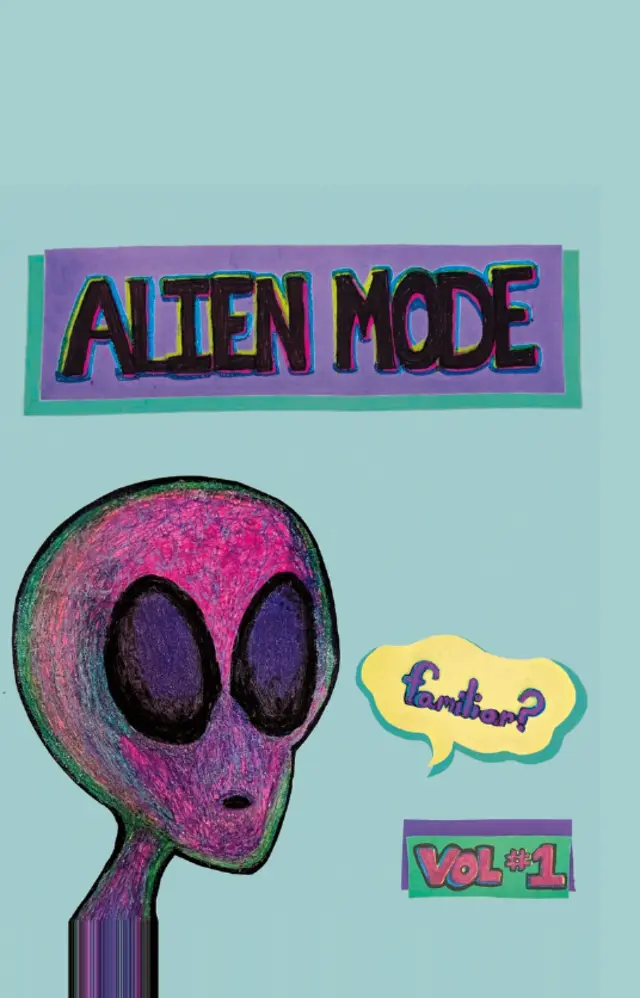
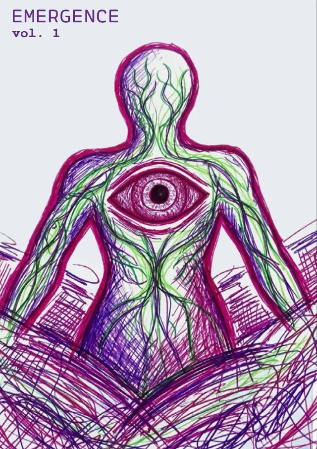
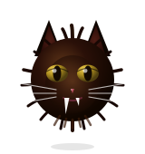
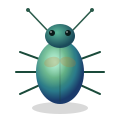
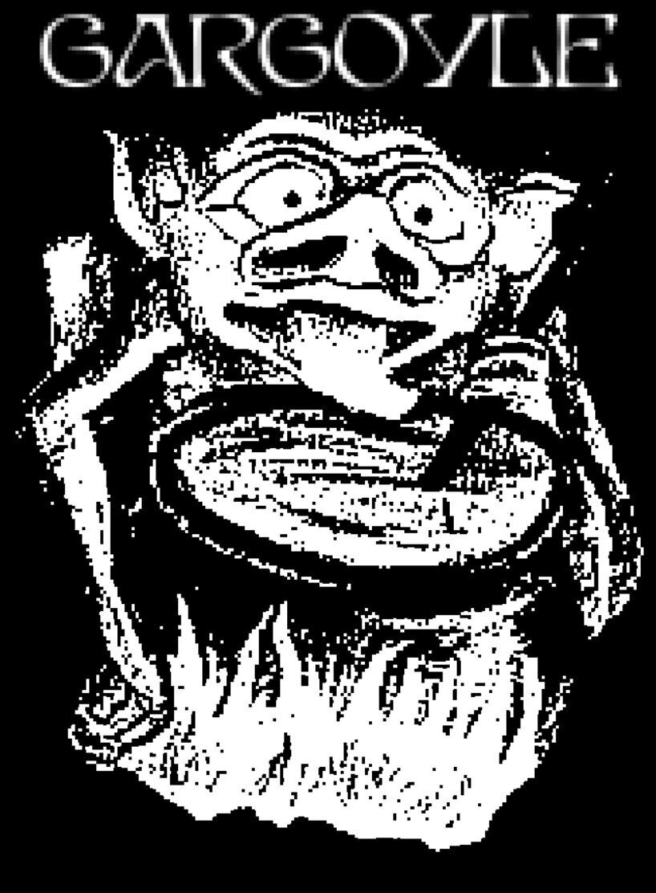
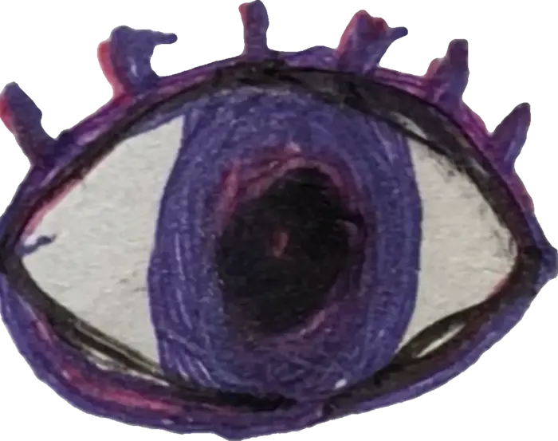

this whole page is a zine. pick a panel to open it.
vol. ∞

a corner of the internet for community, curiosity & cats.
Zines


read every page
Tuba's
Corner

a word from the cat in charge
Bug of the Week

Dogbane Beetle
Chrysochus auratus

Third Eye Charms
handmade charms & wearable art

just passing through



Made with care in Seattle.
Tuba-approved.